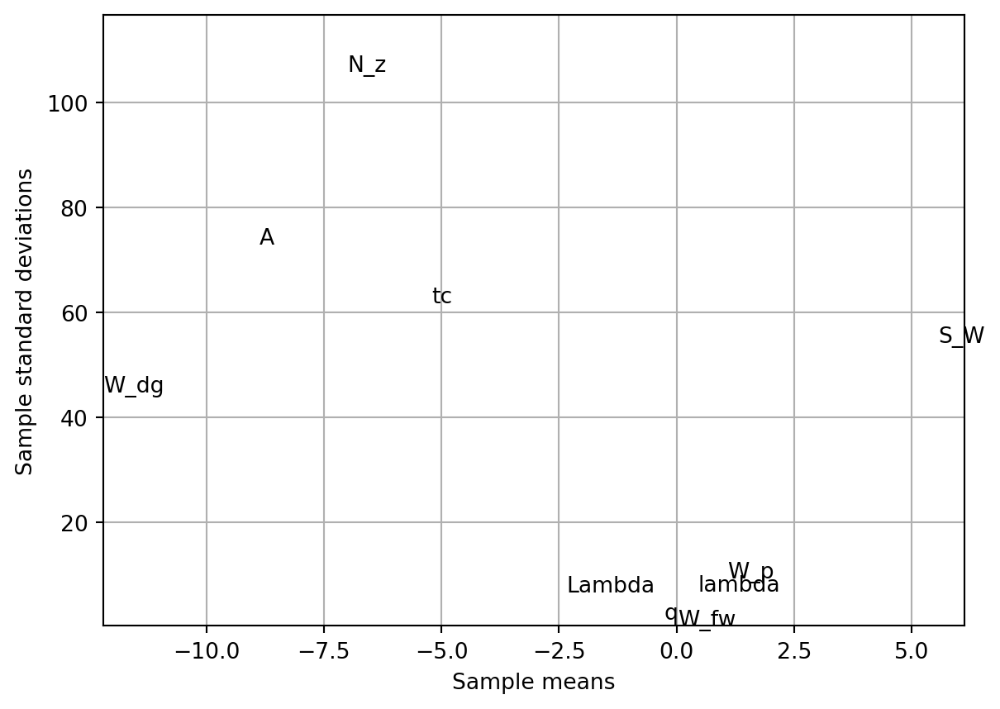
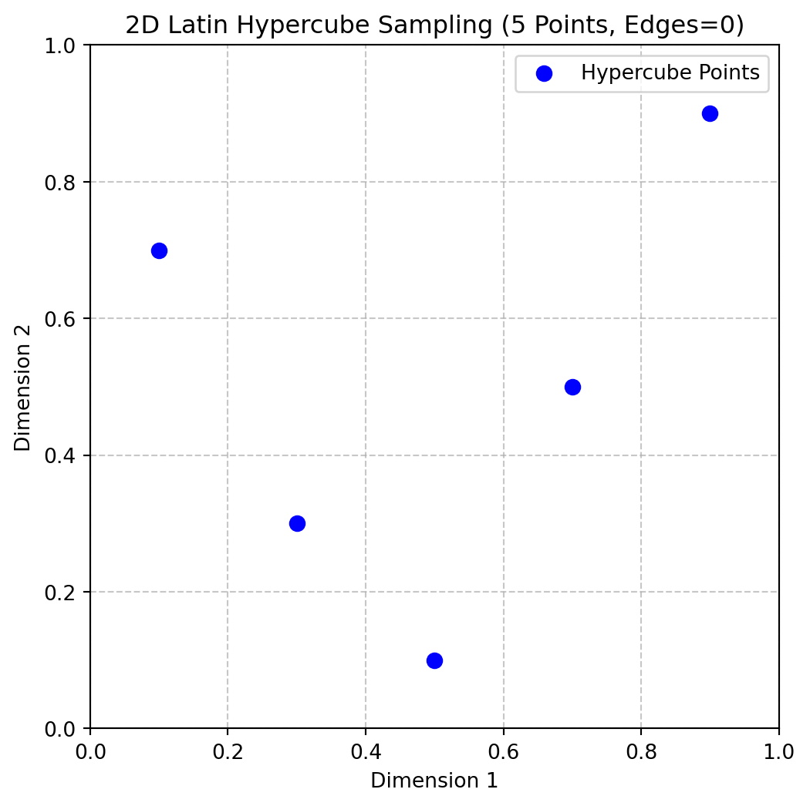
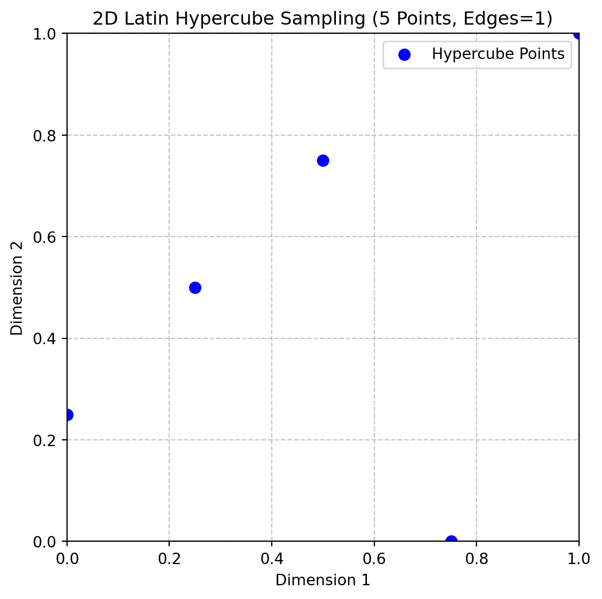
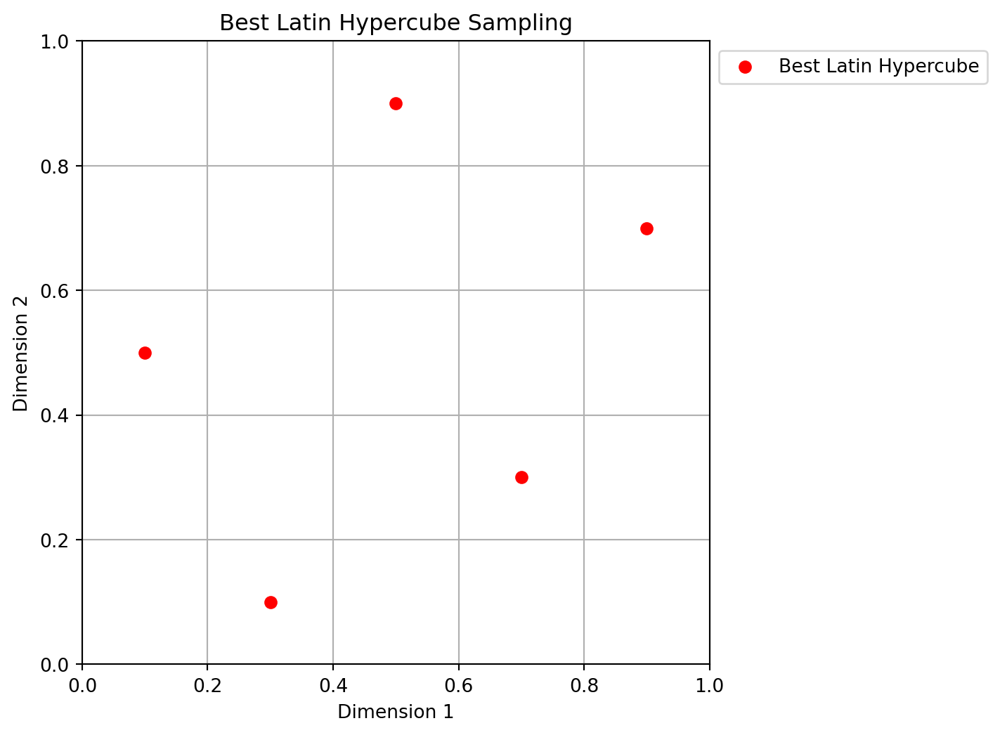
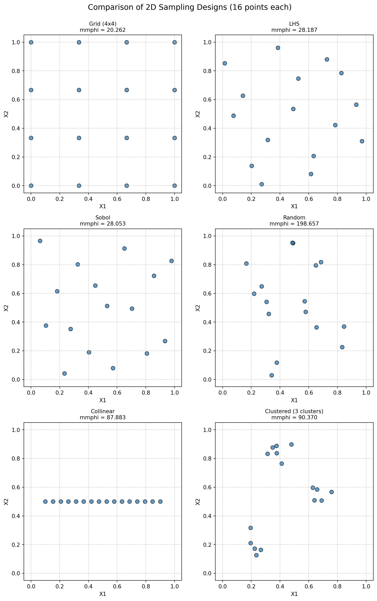

import numpy as np
import pandas as pd
import numpy as np
from typing import Tuple, Optional
import matplotlib.pyplot as plt
from spotpython.utils.sampling import rlh
from spotpython.utils.effects import screening_plot, screeningplan
from spotpython.fun.objectivefunctions import Analytical
from spotpython.utils.sampling import (fullfactorial, bestlh,
jd, mm, mmphi, mmsort, perturb, mmlhs, phisort, mmphi_intensive)
from spotpython.design.poor import Poor
from spotpython.design.clustered import Clustered
from spotpython.design.sobol import Sobol
from spotpython.design.spacefilling import SpaceFilling
from spotpython.design.random import Random
from spotpython.design.grid import Grid4 Sampling Plans
Note
- This section is based on chapter 1 in Forrester, Sóbester, and Keane (2008).
- The following Python packages are imported:
4.1 Ideas and Concepts
Definition 4.1 (Sampling Plan) In the context of computer experiments, the term sampling plan refers to the set of input values, say \(X\),at which the computer code is evaluated.
The goal of a sampling plan is to efficiently explore the input space to understand the behavior of the computer code and build a surrogate model that accurately represents the code’s behavior. Traditionally, Response Surface Methodology (RSM) has been used to design sampling plans for computer experiments. These sampling plans are based on procedures that generate points by means of a rectangular grid or a factorial design.
However, more recently, Design and Analysis of Computer Experiments (DACE) has emerged as a more flexible and powerful approach for designing sampling plans.
Engineering design often requires the construction of a surrogate model \(\hat{f}\) to approximate the expensive response of a black-box function \(f\). The function \(f(x)\) represents a continuous metric (e.g., quality, cost, or performance) defined over a design space \(D \subset \mathbb{R}^k\), where \(x\) is a \(k\)-dimensional vector of design variables. Since evaluating \(f\) is costly, only a sparse set of samples is used to construct \(\hat{f}\), which can then provide inexpensive predictions for any \(x \in D\).
The process involves:
- Sampling discrete observations:
- Using these samples to construct an approximation \(\hat{f}\).
- Ensuring the surrogate model is well-posed, meaning it is mathematically valid and can generalize predictions effectively.
A sampling plan
\[ X = \left\{ x^{(i)} \in D | i = 1, \ldots, n \right\} \]
determines the spatial arrangement of observations. While some models require a minimum number of data points \(n\), once this threshold is met, a surrogate model can be constructed to approximate \(f\) efficiently.
A well-posed model does not always perform well because its ability to generalize depends heavily on the sampling plan used to collect data. If the sampling plan is poorly designed, the model may fail to capture critical behaviors in the design space. For example:
- Extreme Sampling: Measuring performance only at the extreme values of parameters may miss important behaviors in the center of the design space, leading to incomplete understanding.
- Uneven Sampling: Concentrating samples in certain regions while neglecting others forces the model to extrapolate over unsampled areas, potentially resulting in inaccurate or misleading predictions. Additionally, in some cases, the data may come from external sources or be limited in scope, leaving little control over the sampling plan. This can further restrict the model’s ability to generalize effectively.
4.1.1 The ‘Curse of Dimensionality’ and How to Avoid It
The “curse of dimensionality” refers to the exponential increase in computational complexity and data requirements as the number of dimensions (variables) in a problem grows. For a one-dimensional space, sampling \(n\) locations may suffice for accurate predictions. In high-dimensional spaces, the amount of data needed to maintain the same level of accuracy or coverage increases dramatically. For example, if a one-dimensional space requires \(n\) samples for a certain accuracy, a \(k\)-dimensional space would require \(n^k\) samples. This makes tasks like optimization, sampling, and modeling computationally expensive and often impractical in high-dimensional settings.
Example 4.1 (Example: Curse of Dimensionality) Consider a simple example where we want to model the cost of a car tire based on its wheel diameter. If we have one variable (wheel diameter), we might need 10 simulations to get a good estimate of the cost. Now, if we add 8 more variables (e.g., tread pattern, rubber type, etc.), the number of simulations required increases to \(10^8\) (10 million). This is because the number of combinations of design variables grows exponentially with the number of dimensions. This means that the computational budget required to evaluate all combinations of design variables becomes infeasible. In this case, it would take 11,416 years to complete the simulations, making it impractical to explore the design space fully.
4.1.2 Physical versus Computational Experiments
Physical experiments are prone to experimental errors from three main sources:
- Human error: Mistakes made by the experimenter.
- Random error: Measurement inaccuracies that vary unpredictably.
- Systematic error: Consistent bias due to flaws in the experimental setup.
The key distinction is repeatability: systematic errors remain constant across repetitions, while random errors vary.
Computational experiments, on the other hand, are deterministic and free from random errors. However, they are still affected by:
- Human error: Bugs in code or incorrect boundary conditions.
- Systematic error: Biases from model simplifications (e.g., inviscid flow approximations) or finite resolution (e.g., insufficient mesh resolution).
The term “noise” is used differently in physical and computational contexts. In physical experiments, it refers to random errors, while in computational experiments, it often refers to systematic errors.
Understanding these differences is crucial for designing experiments and applying techniques like Gaussian process-based approximations. For physical experiments, replication mitigates random errors, but this is unnecessary for deterministic computational experiments.
4.1.3 Designing Preliminary Experiments (Screening)
Minimizing the number of design variables \(x_1, x_2, \dots, x_k\) is crucial before modeling the objective function \(f\). This process, called screening, aims to reduce dimensionality without compromising the analysis. If \(f\) is at least once differentiable over the design domain \(D\), the partial derivative \(\frac{\partial f}{\partial x_i}\) can be used to classify variables:
- Negligible Variables: If \(\frac{\partial f}{\partial x_i} = 0, \, \forall x \in D\), the variable \(x_i\) can be safely neglected.
- Linear Additive Variables: If \(\frac{\partial f}{\partial x_i} = \text{constant} \neq 0, \, \forall x \in D\), the effect of \(x_i\) is linear and additive.
- Nonlinear Variables: If \(\frac{\partial f}{\partial x_i} = g(x_i), \, \forall x \in D\), where \(g(x_i)\) is a non-constant function, \(f\) is nonlinear in \(x_i\).
- Interactive Nonlinear Variables: If \(\frac{\partial f}{\partial x_i} = g(x_i, x_j, \dots), /, \forall x \in D\), where \(g(x_i, x_j, \dots)\) is a function involving interactions with other variables, \(f\) is nonlinear in \(x_i\) and interacts with \(x_j\).
Measuring \(\frac{\partial f}{\partial x_i}\) across the entire design space is often infeasible due to limited budgets. The percentage of time allocated to screening depends on the problem: If many variables are expected to be inactive, thorough screening can significantly improve model accuracy by reducing dimensionality. If most variables are believed to impact the objective, focus should shift to modeling instead. Screening is a trade-off between computational cost and model accuracy, and its effectiveness depends on the specific problem context.
4.1.3.1 Estimating the Distribution of Elementary Effects
In order to simplify the presentation of what follows, we make, without loss of generality, the assumption that the design space \(D = [0, 1]^k\); that is, we normalize all variables into the unit cube. We shall adhere to this convention for the rest of the book and strongly urge the reader to do likewise when implementing any algorithms described here, as this step not only yields clearer mathematics in some cases but also safeguards against scaling issues.
Before proceeding with the description of the Morris algorithm, we need to define an important statistical concept. Let us restrict our design space \(D\) to a \(k\)-dimensional, \(p\)-level full factorial grid, that is,
\[ x_i \in \{0, \frac{1}{p-1}, \frac{2}{p-1}, \dots, 1\}, \quad \text{ for } i = 1, \dots, k. \]
Definition 4.2 (Elementary Effect) For a given baseline value \(x \in D\), let \(d_i(x)\) denote the elementary effect of \(x_i\), where:
\[ d_i(x) = \frac{f(x_1, \dots, x_i + \Delta, \dots, x_k) - f(x_1, \dots, x_i - \Delta, \dots, x_k)}{2\Delta}, \quad i = 1, \dots, k, \tag{4.1}\] where \(\Delta\) is the step size, which is defined as the distance between two adjacent levels in the grid. In other words, we have:
with \[\Delta = \frac{\xi}{p-1}, \quad \xi \in \mathbb{N}^*, \quad \text{and} \quad x \in D , \text{ such that its components } x_i \leq 1 - \Delta. \]
\(\Delta\) is the step size. The elementary effect \(d_i(x)\) measures the sensitivity of the function \(f\) to changes in the variable \(x_i\) at the point \(x\).
Morris’s method aims to estimate the parameters of the distribution of elementary effects associated with each variable. A large measure of central tendency indicates that a variable has a significant influence on the objective function across the design space, while a large measure of spread suggests that the variable is involved in interactions or contributes to the nonlinearity of \(f\). In practice, the sample mean and standard deviation of a set of \(d_i(x)\) values, calculated in different parts of the design space, are used for this estimation.
To ensure efficiency, the preliminary sampling plan \(X\) should be designed so that each evaluation of the objective function \(f\) contributes to the calculation of two elementary effects, rather than just one (as would occur with a naive random spread of baseline \(x\) values and adding \(\Delta\) to one variable). Additionally, the sampling plan should provide a specified number (e.g., \(r\)) of elementary effects for each variable, independently drawn with replacement. For a detailed discussion on constructing such a sampling plan, readers are encouraged to consult Morris’s original paper (Morris, 1991). Here, we focus on describing the process itself.
The random orientation of the sampling plan \(B\) can be constructed as follows:
- Let \(B\) be a \((k+1) \times k\) matrix of 0s and 1s, where for each column \(i\), two rows differ only in their \(i\)-th entries.
- Compute a random orientation of \(B\), denoted \(B^*\):
\[ B^* = \left( 1_{k+1,k} x^* + (\Delta/2) \left[ (2B-1_{k+1,k}) D^* + 1_{k+1,k} \right] \right) P^*, \]
where:
- \(D^*\) is a \(k\)-dimensional diagonal matrix with diagonal elements \(\pm 1\) (equal probability),
- \(\mathbf{1}\) is a matrix of 1s,
- \(x^*\) is a randomly chosen point in the \(p\)-level design space (limited by \(\Delta\)),
- \(P^*\) is a \(k \times k\) random permutation matrix with one 1 per column and row.
spotpython provides a Python implementation to compute \(B^*\), see https://github.com/sequential-parameter-optimization/spotPython/blob/main/src/spotpython/utils/effects.py.
Here is the corresponding code:
def randorient(k, p, xi, seed=None):
# Initialize random number generator with the provided seed
if seed is not None:
rng = np.random.default_rng(seed)
else:
rng = np.random.default_rng()
# Step length
Delta = xi / (p - 1)
m = k + 1
# A truncated p-level grid in one dimension
xs = np.arange(0, 1 - Delta, 1 / (p - 1))
xsl = len(xs)
if xsl < 1:
print(f"xi = {xi}.")
print(f"p = {p}.")
print(f"Delta = {Delta}.")
print(f"p - 1 = {p - 1}.")
raise ValueError(f"The number of levels xsl is {xsl}, but it must be greater than 0.")
# Basic sampling matrix
B = np.vstack((np.zeros((1, k)), np.tril(np.ones((k, k)))))
# Randomization
# Matrix with +1s and -1s on the diagonal with equal probability
Dstar = np.diag(2 * rng.integers(0, 2, size=k) - 1)
# Random base value
xstar = xs[rng.integers(0, xsl, size=k)]
# Permutation matrix
Pstar = np.zeros((k, k))
rp = rng.permutation(k)
for i in range(k):
Pstar[i, rp[i]] = 1
# A random orientation of the sampling matrix
Bstar = (np.ones((m, 1)) @ xstar.reshape(1, -1) +
(Delta / 2) * ((2 * B - np.ones((m, k))) @ Dstar +
np.ones((m, k)))) @ Pstar
return BstarThe code following snippet generates a random orientation of a sampling matrix Bstar using the randorient() function. The input parameters are:
- k = 3: The number of design variables (dimensions).
- p = 3: The number of levels in the grid for each variable.
- xi = 1: A parameter used to calculate the step size Delta.
Step-size calculation is performed as follows: Delta = xi / (p - 1) = 1 / (3 - 1) = 0.5, which determines the spacing between levels in the grid.
Next, random sampling matrix construction is computed:
- A truncated grid is created with levels
[0, 0.5](based on Delta). - A basic sampling matrix B is constructed, which is a lower triangular matrix with 0s and 1s.
Then, randomization is applied:
Dstar: A diagonal matrix with random entries of +1 or -1.xstar: A random starting point from the grid.Pstar: A random permutation matrix.
Random orientation is applied to the basic sampling matrix B to create Bstar. This involves scaling, shifting, and permuting the rows and columns of B.
The final output is the matrix Bstar, which represents a random orientation of the sampling plan. Each row corresponds to a sampled point in the design space, and each column corresponds to a design variable.
Example 4.2 (Random Orientation of the Sampling Matrix in 2-D)
k = 2
p = 3
xi = 1
Bstar = randorient(k, p, xi, seed=123)
print(f"Random orientation of the sampling matrix:\n{Bstar}")Random orientation of the sampling matrix:
[[0.5 0. ]
[0. 0. ]
[0. 0.5]]We can visualize the random orientation of the sampling matrix in 2-D as shown in Figure 4.1.
plt.figure(figsize=(6, 6))
plt.scatter(Bstar[:, 0], Bstar[:, 1], color='blue', s=50, label='Hypercube Points')
for i in range(Bstar.shape[0]):
plt.text(Bstar[i, 0] + 0.01, Bstar[i, 1] + 0.01, str(i), fontsize=9)
plt.xlim(-0.1, 1.1)
plt.ylim(-0.1, 1.1)
plt.xlabel('x1')
plt.ylabel('x2')
plt.grid()Example 4.3 (Random Orientation of the Sampling Matrix)
k = 3
p = 3
xi = 1
Bstar = randorient(k, p, xi)
print(f"Random orientation of the sampling matrix:\n{Bstar}")Random orientation of the sampling matrix:
[[0. 0. 0. ]
[0. 0. 0.5]
[0.5 0. 0.5]
[0.5 0.5 0.5]]To obtain \(r\) elementary effects for each variable, the screening plan is built from \(r\) random orientations:
\[ X = \begin{pmatrix} B^*_1 \\ B^*_2 \\ \vdots \\ B^*_r \end{pmatrix} \]
The function screeningplan() generates a screening plan by calling the randorient() function r times. It creates a list of random orientations and then concatenates them into a single array, which represents the screening plan. The screening plan implementation in Python is as follows (see https://github.com/sequential-parameter-optimization/spotPython/blob/main/src/spotpython/utils/effects.py):
def screeningplan(k, p, xi, r):
# Empty list to accumulate screening plan rows
X = []
for i in range(r):
X.append(randorient(k, p, xi))
# Concatenate list of arrays into a single array
X = np.vstack(X)
return XIt works like follows:
- The value of the objective function \(f\) is computed for each row of the screening plan matrix \(X\). These values are stored in a column vector \(t\) of size \((r * (k + 1)) \times 1\), where:
ris the number of random orientations.kis the number of design variables.
The elementary effects are calculated using the following formula:
- For each random orientation, adjacent rows of the screening plan matrix X and their corresponding function values from t are used.
- These values are inserted into Equation 4.1 to compute elementary effects for each variable. An elementary effect measures the sensitivity of the objective function to changes in a specific variable.
Results can be used for a statistical analysis. After collecting a sample of \(r\) elementary effects for each variable:
- The sample mean (central tendency) is computed to indicate the overall influence of the variable.
- The sample standard deviation (spread) is computed to capture variability, which may indicate interactions or nonlinearity.
The results (sample means and standard deviations) are plotted on a chart for comparison. This helps identify which variables have the most significant impact on the objective function and whether their effects are linear or involve interactions. This is implemented in the function screening_plot() in Python, which uses the helper function _screening() to calculate the elementary effects and their statistics.
def _screening(X, fun, xi, p, labels, bounds=None) -> tuple:
"""Helper function to calculate elementary effects for a screening design.
Args:
X (np.ndarray): The screening plan matrix, typically structured
within a [0,1]^k box.
fun (object): The objective function to evaluate at each
design point in the screening plan.
xi (float): The elementary effect step length factor.
p (int): Number of discrete levels along each dimension.
labels (list of str): A list of variable names corresponding to
the design variables.
bounds (np.ndarray): A 2xk matrix where the first row contains
lower bounds and the second row contains upper bounds for
each variable.
Returns:
tuple: A tuple containing two arrays:
- sm: The mean of the elementary effects for each variable.
- ssd: The standard deviation of the elementary effects for
each variable.
"""
k = X.shape[1]
r = X.shape[0] // (k + 1)
# Scale each design point
t = np.zeros(X.shape[0])
for i in range(X.shape[0]):
if bounds is not None:
X[i, :] = bounds[0, :] + X[i, :] * (bounds[1, :] - bounds[0, :])
t[i] = fun(X[i, :])
# Elementary effects
F = np.zeros((k, r))
for i in range(r):
for j in range(i * (k + 1), i * (k + 1) + k):
idx = np.where(X[j, :] - X[j + 1, :] != 0)[0][0]
F[idx, i] = (t[j + 1] - t[j]) / (xi / (p - 1))
# Statistical measures (divide by n)
ssd = np.std(F, axis=1, ddof=0)
sm = np.mean(F, axis=1)
return sm, ssd
def screening_plot(X, fun, xi, p, labels, bounds=None, show=True) -> None:
"""Generates a plot with elementary effect screening metrics.
This function calculates the mean and standard deviation of the
elementary effects for a given set of design variables and plots
the results.
Args:
X (np.ndarray):
The screening plan matrix, typically structured within a [0,1]^k box.
fun (object):
The objective function to evaluate at each design point in the screening plan.
xi (float):
The elementary effect step length factor.
p (int):
Number of discrete levels along each dimension.
labels (list of str):
A list of variable names corresponding to the design variables.
bounds (np.ndarray):
A 2xk matrix where the first row contains lower bounds and
the second row contains upper bounds for each variable.
show (bool):
If True, the plot is displayed. Defaults to True.
Returns:
None: The function generates a plot of the results.
"""
k = X.shape[1]
sm, ssd = _screening(X=X, fun=fun, xi=xi, p=p, labels=labels, bounds=bounds)
plt.figure()
for i in range(k):
plt.text(sm[i], ssd[i], labels[i], fontsize=10)
plt.axis([min(sm), 1.1 * max(sm), min(ssd), 1.1 * max(ssd)])
plt.xlabel("Sample means")
plt.ylabel("Sample standard deviations")
plt.gca().tick_params(labelsize=10)
plt.grid(True)
if show:
plt.show()4.1.4 Special Considerations When Deploying Screening Algorithms
When implementing the screening algorithm described above, two specific scenarios require special attention:
- Duplicate Design Points: If the dimensionality \(k\) of the space is relatively low and you can afford a large number of elementary effects \(r\), we should be be aware of the increased probability of duplicate design points appearing in the sampling plan \(X\). *Since the responses at sample points are deterministic, there’s no value in evaluating the same point multiple times. Fortunately, this issue is relatively uncommon in practice, as screening high-dimensional spaces typically requires large numbers of elementary effects, which naturally reduces the likelihood of duplicates.
- Failed Simulations: Numerical simulation codes occasionally fail to return valid results due to meshing errors, non-convergence of partial differential equation solvers, numerical instabilities, or parameter combinations outside the stable operating range.
From a screening perspective, this is particularly problematic because an entire random orientation \(B^*\) becomes compromised if even a single point within it fails to evaluate properly. Implementing error handling strategies or fallback methods to manage such cases should be considered.
For robust screening studies, monitoring simulation success rates and having contingency plans for failed evaluations are important aspects of the experimental design process.
4.2 Analyzing Variable Importance in Aircraft Wing Weight
Let us consider the following analytical expression used as a conceptual level estimate of the weight of a light aircraft wing as discussed in Chapter 1.
fun = Analytical()
k = 10
p = 10
xi = 1
r = 25
X = screeningplan(k=k, p=p, xi=xi, r=r) # shape (r x (k+1), k)
value_range = np.array([
[150, 220, 6, -10, 16, 0.5, 0.08, 2.5, 1700, 0.025],
[200, 300, 10, 10, 45, 1.0, 0.18, 6.0, 2500, 0.08 ],
])
labels = [
"S_W", "W_fw", "A", "Lambda",
"q", "lambda", "tc", "N_z",
"W_dg", "W_p"
]
screening_plot(
X=X,
fun=fun.fun_wingwt,
bounds=value_range,
xi=xi,
p=p,
labels=labels,
)

Nondeterministic Results
The code will generate a slightly different screening plan each time, as it uses random orientations of the sampling matrix \(B\).
Figure 4.2 provides valuable insights into variable activity without requiring domain expertise. The screening study with \(r = 25\) elementary effects reveals distinct patterns in how variables affect wing weight:
- Variables with Minimal Impact: A clearly defined group of variables clusters around the origin - indicating their minimal impact on wing weight:
- Paint weight (\(W_p\)) - as expected, contributes little to overall wing weight
- Dynamic pressure (\(q\)) - within our chosen range, this has limited effect (essentially representing different cruise altitudes at the same speed)
- Taper ratio (\(\lambda\)) and quarter-chord sweep (\(\Lambda\)) - these geometric parameters have minor influence within the narrow range (-10° to 10°) typical of light aircraft
- Variables with Linear Effects:
- While still close to the origin, fuel weight (\(W_{fw}\)) shows a slightly larger central tendency with very low standard deviation. This indicates moderate importance but minimal involvement in interactions with other variables.
- Variables with Nonlinear/Interactive Effects:
- Aspect ratio (\(A\)) and airfoil thickness ratio (\(R_{tc}\)) show similar importance levels, but their high standard deviations suggest significant nonlinear behavior and interactions with other variables.
- Dominant Variables: The most significant impacts come from:
- Flight design gross weight (\(W_{dg}\))
- Wing area (\(S_W\))
- Ultimate load factor (\(N_z\))
These variables show both large central tendency values and high standard deviations, indicating strong direct effects and complex interactions. The interaction between aspect ratio and load factor is particularly important - high values of both create extremely heavy wings, explaining why highly maneuverable fighter jets cannot use glider-like wing designs.
What makes this screening approach valuable is its ability to identify critical variables without requiring engineering knowledge or expensive modeling. In real-world applications, we rarely have the luxury of creating comprehensive parameter space visualizations, which is precisely why surrogate modeling is needed. After identifying the active variables through screening, we can design a focused sampling plan for these key variables. This forms the foundation for building an accurate surrogate model of the objective function.
When the objective function is particularly expensive to evaluate, we might recycle the runs performed during screening for the actual model fitting step. This is most effective when some variables prove to have no impact at all. However, since completely inactive variables are rare in practice, engineers must carefully balance the trade-off between reusing expensive simulation runs and introducing potential noise into the model.
4.3 Designing a Sampling Plan
4.3.1 Stratification
A feature shared by all of the approximation models discussed in Forrester, Sóbester, and Keane (2008) is that they are more accurate in the vicinity of the points where we have evaluated the objective function. In later chapters we will delve into the laws that quantify our decaying trust in the model as we move away from a known, sampled point, but for the purposes of the present discussion we shall merely draw the intuitive conclusion that a uniform level of model accuracy throughout the design space requires a uniform spread of points. A sampling plan possessing this feature is said to be space-filling.
The most straightforward way of sampling a design space in a uniform fashion is by means of a rectangular grid of points. This is the full factorial sampling technique.
Here is the simplified version of a Python function that will sample the unit hypercube at all levels in all dimensions, with the \(k\)-vector \(q\) containing the number of points required along each dimension, see https://github.com/sequential-parameter-optimization/spotPython/blob/main/src/spotpython/utils/sampling.py.
The variable Edges specifies whether we want the points to be equally spaced from edge to edge (Edges=1) or we want them to be in the centres of \(n = q_1 \times q_2 \times \ldots \times q_k\) bins filling the unit hypercube (for any other value of Edges).
def fullfactorial(q_param, Edges=1) -> np.ndarray:
"""Generates a full factorial sampling plan in the unit cube.
Args:
q (list or np.ndarray):
A list or array containing the number of points along each dimension (k-vector).
Edges (int, optional):
Determines spacing of points. If `Edges=1`, points are equally spaced from edge to edge (default).
Otherwise, points will be in the centers of n = q[0]*q[1]*...*q[k-1] bins filling the unit cube.
Returns:
(np.ndarray): Full factorial sampling plan as an array of shape (n, k), where n is the total number of points and k is the number of dimensions.
Raises:
ValueError: If any dimension in `q` is less than 2.
"""
q_levels = np.array(q_param) # Use a distinct variable for original levels
if np.min(q_levels) < 2:
raise ValueError("You must have at least two points per dimension.")
n = np.prod(q_levels)
k = len(q_levels)
X = np.zeros((n, k))
# q_for_prod_calc is used for calculating repetitions, includes the phantom element.
# This matches the logic of the user-provided snippet where 'q' was modified.
q_for_prod_calc = np.append(q_levels, 1)
for j in range(k): # k is the original number of dimensions
# current_dim_levels is the number of levels for the current dimension j
# In the user's snippet, q[j] correctly refers to the original level count
# as j ranges from 0 to k-1, and q_for_prod_calc[j] = q_levels[j] for this range.
current_dim_levels = q_for_prod_calc[j]
if Edges == 1:
one_d_slice = np.linspace(0, 1, int(current_dim_levels))
else:
# Corrected calculation for bin centers
if current_dim_levels == 1: # Should not be hit if np.min(q_levels) >= 2
one_d_slice = np.array([0.5])
else:
one_d_slice = np.linspace(1 / (2 * current_dim_levels),
1 - 1 / (2 * current_dim_levels),
int(current_dim_levels))
column = np.array([])
# The product q_for_prod_calc[j + 1 : k] correctly calculates
# the product of remaining original dimensions' levels.
num_consecutive_repeats = np.prod(q_for_prod_calc[j + 1 : k])
# This loop structure replicates the logic from the user's snippet
while len(column) < n:
for ll_idx in range(int(current_dim_levels)): # Iterate through levels of current dimension
val_to_repeat = one_d_slice[ll_idx]
column = np.append(column, np.ones(int(num_consecutive_repeats)) * val_to_repeat)
X[:, j] = column
return Xq = [3, 2]
X = fullfactorial(q, Edges=0)
print(X)[[0.16666667 0.25 ]
[0.16666667 0.75 ]
[0.5 0.25 ]
[0.5 0.75 ]
[0.83333333 0.25 ]
[0.83333333 0.75 ]]Figure 4.3 shows the points in the unit hypercube for the case of 3x2 points.
X = fullfactorial(q, Edges=1)
print(X)[[0. 0. ]
[0. 1. ]
[0.5 0. ]
[0.5 1. ]
[1. 0. ]
[1. 1. ]]Figure 4.4 shows the points in the unit hypercube for the case of 3x2 points with edges.
The full factorial sampling plan method generates a uniform sampling design by creating a grid of points across all dimensions. For example, calling fullfactorial([3, 4, 5], 1) produces a three-dimensional sampling plan with 3, 4, and 5 levels along each dimension, respectively. While this approach satisfies the uniformity criterion, it has two significant limitations:
Restricted Design Sizes: The method only works for designs where the total number of points \(n\) can be expressed as the product of the number of levels in each dimension, i.e., \(n = q_1 \times q_2 \times \cdots \times q_k\).
Overlapping Projections: When the sampling points are projected onto individual axes, sets of points may overlap, reducing the effectiveness of the sampling plan. This can lead to non-uniform coverage in the projections, which may not fully represent the design space.
4.3.2 Latin Squares and Random Latin Hypercubes
To improve the uniformity of projections for any individual variable, the range of that variable can be divided into a large number of equal-sized bins, and random subsamples of equal size can be generated within these bins. This method is called stratified random sampling. Extending this idea to all dimensions results in a stratified sampling plan, commonly implemented using Latin hypercube sampling.
Definition 4.3 (Latin Squares and Hypercubes) In the context of statistical sampling, a square grid containing sample positions is a Latin square if (and only if) there is only one sample in each row and each column. A Latin hypercube is the generalisation of this concept to an arbitrary number of dimensions, whereby each sample is the only one in each axis-aligned hyperplane containing it
For two-dimensional discrete variables, a Latin square ensures uniform projections. An \((n \times n)\) Latin square is constructed by filling each row and column with a permutation of \(\{1, 2, \dots, n\}\), ensuring each number appears only once per row and column.
Example 4.4 (Latin Square) For \(n = 4\), a Latin square might look like this:
2 1 3 4
3 2 4 1
1 4 2 3
4 3 1 2Latin Hypercubes are the multidimensional extension of Latin squares. The design space is divided into equal-sized hypercubes (bins), and one point is placed in each bin. The placement ensures that moving along any axis from an occupied bin does not encounter another occupied bin. This guarantees uniform projections across all dimensions. To construct a Latin hypercube, the following steps are taken:
- Represent the sampling plan as an \(n \times k\) matrix \(X\), where \(n\) is the number of points and \(k\) is the number of dimensions.
- Fill each column of \(X\) with random permutations of \(\{1, 2, \dots, n\}\).
- Normalize the plan into the unit hypercube \([0, 1]^k\).
This approach ensures multidimensional stratification and uniformity in projections. Here is the code:
def rlh(n: int, k: int, edges: int = 0) -> np.ndarray:
# Initialize array
X = np.zeros((n, k), dtype=float)
# Fill with random permutations
for i in range(k):
X[:, i] = np.random.permutation(n)
# Adjust normalization based on the edges flag
if edges == 1:
# [X=0..n-1] -> [0..1]
X = X / (n - 1)
else:
# Points at true midpoints
# [X=0..n-1] -> [0.5/n..(n-0.5)/n]
X = (X + 0.5) / n
return XExample 4.5 (Random Latin Hypercube) The following code can be used to generate a 2D Latin hypercube with 5 points and edges=0:
X = rlh(n=5, k=2, edges=0)
print(X)[[0.3 0.5]
[0.9 0.3]
[0.1 0.9]
[0.7 0.7]
[0.5 0.1]]Figure 4.5 shows the points in the unit hypercube for the case of 5 points with edges=0.

Example 4.6 (Random Latin Hypercube with Edges) The following code can be used to generate a 2D Latin hypercube with 5 points and edges=1:
X = rlh(n=5, k=2, edges=1)
print(X)[[0.75 0.5 ]
[0. 0.75]
[0.5 0.25]
[1. 0. ]
[0.25 1. ]]Figure 4.6 shows the points in the unit hypercube for the case of 5 points with edges=1.

4.3.3 Space-filling Designs: Maximin Plans
A widely adopted measure for assessing the uniformity, or ‘space-fillingness’, of a sampling plan is the maximin metric, initially proposed by Johnson, Moore, and Ylvisaker (1990). This criterion can be formally defined as follows.
Consider a sampling plan \(X\). Let \(d_1, d_2, \ldots, d_m\) represent the unique distances between all possible pairs of points within \(X\), arranged in ascending order. Furthermore, let \(J_1, J_2, \ldots, J_m\) be defined such that \(J_j\) denotes the count of point pairs in \(X\) separated by the distance \(d_j\).
Definition 4.4 (Maximin plan) A sampling plan \(X\) is considered a maximin plan if, among all candidate plans, it maximizes the smallest inter-point distance \(d_1\). Among plans that satisfy this condition, it further minimizes \(J_1\), the number of pairs separated by this minimum distance.
While this definition is broadly applicable to any collection of sampling plans, our focus is narrowed to Latin hypercube designs to preserve their desirable stratification properties. However, even within this restricted class, Definition 4.4 may identify multiple equivalent maximin designs. To address this, a more comprehensive ‘tie-breaker’ definition, as proposed by Morris and Mitchell (1995), is employed:
Definition 4.5 (Maximin plan with tie-breaker) A sampling plan \(X\) is designated as the maximin plan if it sequentially optimizes the following conditions: it maximizes \(d_1\); among those, it minimizes \(J_1\); among those, it maximizes \(d_2\); among those, it minimizes \(J_2\); and so forth, concluding with minimizing \(J_m\).
Johnson, Moore, and Ylvisaker (1990) established that the maximin criterion (Definition 4.4) is equivalent to the D-optimality criterion used in linear regression. However, the extended maximin criterion incorporating a tie-breaker (Definition 4.5) is often preferred due to its intuitive nature and practical utility. Given that the sampling plans under consideration make no assumptions about model structure, the latter criterion (Definition 4.5) will be employed.
To proceed, a precise definition of ‘distance’ within these contexts is necessary. The p-norm is the most widely adopted metric for this purpose:
Definition 4.6 (p-norm) The p-norm of a vector \(\vec{x} = (x_1, x_2, \ldots, x_k)\) is defined as:
\[ d_p(\vec{x}^{(i_1)}, \vec{x}^{(i_2)}) = \left( \sum_{j=1}^k |x_j^{(i_1)} - x_j^{(i_2)}|^p \right)^{1/p}. \tag{4.2}\]
When \(p = 1\), Equation 4.2 defines the rectangular distance, occasionally referred to as the Manhattan norm (an allusion to a grid-like city layout). Setting \(p = 2\) yields the Euclidean norm. The existing literature offers limited evidence to suggest the superiority of one norm over the other for evaluating sampling plans when no model structure assumptions are made. It is important to note, however, that the rectangular distance is considerably less computationally demanding. This advantage can be quite significant, particularly when evaluating large sampling plans.
For the computational implementation of Definition 4.5, the initial step involves constructing the vectors \(d_1, d_2, \ldots, d_m\) and \(J_1, J_2, \ldots, J_m\). The jd function facilitates this task.
4.3.3.1 The Function jd
The function jd computes the distinct p-norm distances between all pairs of points in a given set and counts their occurrences. It returns two arrays: one for the distinct distances and another for their multiplicities.
def jd(X: np.ndarray, p: float = 1.0) -> Tuple[np.ndarray, np.ndarray]:
"""
Args:
X (np.ndarray):
A 2D array of shape (n, d) representing n points
in d-dimensional space.
p (float, optional):
The distance norm to use.
p=1 uses the Manhattan (L1) norm, while p=2 uses the
Euclidean (L2) norm. Defaults to 1.0 (Manhattan norm).
Returns:
(np.ndarray, np.ndarray):
A tuple (J, distinct_d), where:
- distinct_d is a 1D float array of unique,
sorted distances between points.
- J is a 1D integer array that provides
the multiplicity (occurrence count)
of each distance in distinct_d.
"""
n = X.shape[0]
# Allocate enough space for all pairwise distances
# (n*(n-1))/2 pairs for an n-point set
pair_count = n * (n - 1) // 2
d = np.zeros(pair_count, dtype=float)
# Fill the distance array
idx = 0
for i in range(n - 1):
for j in range(i + 1, n):
# Compute the p-norm distance
d[idx] = np.linalg.norm(X[i] - X[j], ord=p)
idx += 1
# Find unique distances and their multiplicities
distinct_d = np.unique(d)
J = np.zeros_like(distinct_d, dtype=int)
for i, val in enumerate(distinct_d):
J[i] = np.sum(d == val)
return J, distinct_dExample 4.7 (The Function jd) Consider a small 3-point set in 2D space, with points located at (0,0), (1,1), and (2,2) as shown in Figure 4.7. The distinct distances and their occurrences can be computed using the jd function, as shown in the following code:
J, distinct_d = jd(X, p=2.0)
print("Distinct distances (d_i):", distinct_d)
print("Occurrences (J_i):", J)Distinct distances (d_i): [1.41421356 2.82842712]
Occurrences (J_i): [2 1]4.3.4 Memory Management
A computationally intensive part of the calculation performed with the jd-function is the creation of the vector \(\vec{d}\) containing all pairwise distances. This is particularly true for large sampling plans; for instance, a 1000-point plan requires nearly half a million distance calculations.
Definition 4.7 (Pre-allocation of Memory) Pre-allocation of memory is a programming technique where a fixed amount of memory is reserved for a data structure (like an array or vector) before it is actually filled with data. This is done to avoid the computational overhead associated with dynamic memory allocation, which involves repeatedly requesting and resizing memory as new elements are added.
Consequently, pre-allocating memory for the distance vector \(\vec{d}\) is essential. This necessitates a slightly less direct method for computing the indices of \(\vec{d}\), rather than appending each new element, which would involve costly dynamic memory allocation.
The implementation of Definition 4.5 is now required. Finding the most space-filling design involves pairwise comparisons. This problem can be approached using a ‘divide and conquer’ strategy, simplifying it to the task of selecting the better of two sampling plans. The function mm(X1,X2,p) is designed for this purpose. It returns an index indicating which of the two designs is more space-filling, or 0 if they are equally space-filling, based on the \(p\)-norm for distance computation.
4.3.4.1 The Function mm
The function mm compares two sampling plans based on the Morris-Mitchell criterion. It uses the jd function to compute the distances and multiplicities, constructs vectors for comparison, and determines which plan is more space-filling.
def mm(X1: np.ndarray, X2: np.ndarray, p: Optional[float] = 1.0) -> int:
"""
Args:
X1 (np.ndarray): A 2D array representing the first sampling plan.
X2 (np.ndarray): A 2D array representing the second sampling plan.
p (float, optional): The distance metric. p=1 uses Manhattan (L1) distance,
while p=2 uses Euclidean (L2). Defaults to 1.0.
Returns:
int:
- 0 if both plans are identical or equally space-filling
- 1 if X1 is more space-filling
- 2 if X2 is more space-filling
"""
X1_sorted = X1[np.lexsort(np.rot90(X1))]
X2_sorted = X2[np.lexsort(np.rot90(X2))]
if np.array_equal(X1_sorted, X2_sorted):
return 0 # Identical sampling plans
# Compute distance multiplicities for each plan
J1, d1 = jd(X1, p)
J2, d2 = jd(X2, p)
m1, m2 = len(d1), len(d2)
# Construct V1 and V2: alternate distance and negative multiplicity
V1 = np.zeros(2 * m1)
V1[0::2] = d1
V1[1::2] = -J1
V2 = np.zeros(2 * m2)
V2[0::2] = d2
V2[1::2] = -J2
# Trim the longer vector to match the size of the shorter
m = min(m1, m2)
V1 = V1[:m]
V2 = V2[:m]
# Compare element-by-element:
# c[i] = 1 if V1[i] > V2[i], 2 if V1[i] < V2[i], 0 otherwise.
c = (V1 > V2).astype(int) + 2 * (V1 < V2).astype(int)
if np.sum(c) == 0:
# Equally space-filling
return 0
else:
# The first non-zero entry indicates which plan is better
idx = np.argmax(c != 0)
return c[idx]Example 4.8 (The Function mm) We can use the mm function to compare two sampling plans. The following code creates two 3-point sampling plans in 2D (shown in Figure 4.8) and compares them using the Morris-Mitchell criterion:
X1 = np.array([[0.0, 0.0],[0.5, 0.5],[0.0, 1.0], [1.0, 1.0]])
X2 = np.array([[0.1, 0.1],[0.4, 0.6],[0.1, 0.9], [0.9, 0.9]])We can compare which plan has better space-filling (Morris-Mitchell). The output is either 0, 1, or 2 depending on which plan is more space-filling.
better = mm(X1, X2, p=2.0)
print(f"Plan {better} is more space-filling.")Plan 1 is more space-filling.4.3.4.2 The Function mmphi
Searching across a space of potential sampling plans can be accomplished by pairwise comparisons. An optimization algorithm could, in theory, be written with mm as the comparative objective. However, experimental evidence (Morris and Mitchell 1995) suggests that the resulting optimization landscape can be quite deceptive, making it difficult to search reliably. This difficulty arises because the comparison process terminates upon finding the first non-zero element in the comparison array c. Consequently, the remaining values in the distance (\(d_1, d_2, ..., d_m\)) and multiplicity (\(J_1, J_2, ..., J_m\)) arrays are disregarded. These disregarded values, however, might contain potentially useful ‘slope’ information about the global landscape for the optimization process.
To address this, Morris and Mitchell (1995) defined the following scalar-valued criterion function, which is used to rank competing sampling plans. This function, while based on the logic of Definition 4.5, incorporates the complete vectors \(d_1, d_2, ..., d_m\) and \(J_1, J_2, ..., J_m\).
Definition 4.8 (Morris-Mitchell Criterion) The Morris-Mitchell criterion is defined as:
\[ \Phi_q (X) = \left(\sum_{j=1}^m J_j d_j^{-q}\right)^{1/q}, \tag{4.3}\]
where \(X\) is the sampling plan, \(d_j\) is the distance between points, \(J_j\) is the multiplicity of that distance, and \(q\) is a user-defined exponent. The parameter \(q\) can be adjusted to control the influence of smaller distances on the overall metric.
The smaller the value of \(\Phi_q\), the better the space-filling properties of \(X\) will be.
The function mmphi computes the Morris-Mitchell sampling plan quality criterion for a given sampling plan. It takes a 2D array of points and calculates the space-fillingness metric based on the distances between points. This can be implemented in Python as follows:
def mmphi(X: np.ndarray,
q: Optional[float] = 2.0,
p: Optional[float] = 1.0) -> float:
"""
Args:
X (np.ndarray):
A 2D array representing the sampling plan,
where each row is a point in
d-dimensional space (shape: (n, d)).
q (float, optional):
Exponent used in the computation of the metric.
Defaults to 2.0.
p (float, optional):
The distance norm to use.
For example, p=1 is Manhattan (L1),
p=2 is Euclidean (L2). Defaults to 1.0.
Returns:
float:
The space-fillingness metric Phiq. Larger values typically indicate a more
space-filling plan according to the Morris-Mitchell criterion.
"""
# Compute the distance multiplicities: J, and unique distances: d
J, d = jd(X, p)
# Summation of J[i] * d[i]^(-q), then raised to 1/q
# This follows the Morris-Mitchell definition.
Phiq = np.sum(J * (d ** (-q))) ** (1.0 / q)
return PhiqExample 4.9 (The Function mmphi) We can use the mmphi function to evaluate the space-filling quality of the two sampling plans from Example 4.8. The following code uses these two 3-point sampling plans in 2D and computes their quality using the Morris-Mitchell criterion:
# Two simple sampling plans from above
quality1 = mmphi(X1, q=2, p=2)
quality2 = mmphi(X2, q=2, p=2)
print(f"Quality of sampling plan X1: {quality1}")
print(f"Quality of sampling plan X2: {quality2}")Quality of sampling plan X1: 2.91547594742265
Quality of sampling plan X2: 3.917162046269215This equation provides a more compact representation of the maximin criterion, but the selection of the \(q\) value is an important consideration. Larger values of \(q\) ensure that terms in the sum corresponding to smaller inter-point distances (the \(d_j\) values, which are sorted in ascending order) have a dominant influence. As a result, \(\Phi_q\) will rank sampling plans in a way that closely emulates the original maximin definition (Definition 4.5). This implies that the optimization landscape might retain the challenging characteristics that the \(\Phi_q\) metric, especially with smaller \(q\) values, is intended to alleviate. Conversely, smaller \(q\) values tend to produce a \(\Phi_q\) landscape that, while not perfectly aligning with the original definition, is generally more conducive to optimization.
To illustrate the relationship between Equation 4.3 and the maximin criterion of Definition 4.5, sets of 50 random Latin hypercubes of varying sizes and dimensionalities were considered by Forrester, Sóbester, and Keane (2008). The correlation plots from this analysis suggest that as the sampling plan size increases, a smaller \(q\) value is needed for the \(\Phi_q\)-based ranking to closely match the ranking derived from Definition 4.5.
Rankings based on both the direct maximin comparison (mm) and the \(\Phi_q\) metric (mmphi), determined using a simple bubble sort algorithm, are implemented in the Python function mmsort.
4.3.4.3 The Function mmsort
The function mmsort is designed to rank multiple sampling plans based on their space-filling properties using the Morris-Mitchell criterion. It takes a 3D array of sampling plans and returns the indices of the plans sorted in ascending order of their space-filling quality.
def mmsort(X3D: np.ndarray, p: Optional[float] = 1.0) -> np.ndarray:
"""
Args:
X3D (np.ndarray):
A 3D NumPy array of shape (n, d, m), where m is the number of
sampling plans, and each plan is an (n, d) matrix of points.
p (float, optional):
The distance metric to use. p=1 for Manhattan (L1), p=2 for
Euclidean (L2). Defaults to 1.0.
Returns:
np.ndarray:
A 1D integer array of length m that holds the plan indices in
ascending order of space-filling quality. The first index in the
returned array corresponds to the most space-filling plan.
"""
# Number of plans (m)
m = X3D.shape[2]
# Create index array (1-based to match original MATLAB convention)
Index = np.arange(1, m + 1)
swap_flag = True
while swap_flag:
swap_flag = False
i = 0
while i < m - 1:
# Compare plan at Index[i] vs. Index[i+1] using mm()
# Note: subtract 1 from each index to convert to 0-based array indexing
if mm(X3D[:, :, Index[i] - 1], X3D[:, :, Index[i + 1] - 1], p) == 2:
# Swap indices if the second plan is more space-filling
Index[i], Index[i + 1] = Index[i + 1], Index[i]
swap_flag = True
i += 1
return IndexExample 4.10 (The Function mmsort) The mmsort function can be used to rank multiple sampling plans based on their space-filling properties. The following code demonstrates how to use mmsort to compare two 3-point sampling plans in 3D space:
Suppose we have two 3-point sampling plans X1 and X1 from above. They are sorted using the Morris-Mitchell criterion with \(p=2.0\). For example, the output [1, 2] indicates that X1 is more space-filling than X2:
X3D = np.stack([X1, X2], axis=2)
ranking = mmsort(X3D, p=2.0)
print(ranking)[1 2]To determine the optimal Latin hypercube for a specific application, a recommended approach by Morris and Mitchell (1995) involves minimizing \(\Phi_q\) for a set of \(q\) values (1, 2, 5, 10, 20, 50, and 100). Subsequently, the best plan from these results is selected based on the actual maximin definition. The mmsort function can be utilized for this purpose: a 3D matrix, X3D, can be constructed where each 2D slice represents the best sampling plan found for each \(\Phi_q\). Applying mmsort(X3D,1) then ranks these plans according to Definition 4.5, using the rectangular distance metric. The subsequent discussion will address the methods for finding these optimized \(\Phi_q\) designs.
4.3.4.4 The Function phisort
phisort only differs from mmsort in having \(q\) as an additional argument, as well as the comparison line being:
if mmphi(X3D[:, :, Index[i] - 1], q=q, p=p) >
mmphi(X3D[:, :, Index[i + 1] - 1], q=q, p=p):def phisort(X3D: np.ndarray,
q: Optional[float] = 2.0,
p: Optional[float] = 1.0) -> np.ndarray:
"""
Args:
X3D (np.ndarray):
A 3D array of shape (n, d, m),
where m is the number of sampling plans.
q (float, optional):
Exponent for the mmphi metric. Defaults to 2.0.
p (float, optional):
Distance norm for mmphi.
p=1 is Manhattan; p=2 is Euclidean.
Defaults to 1.0.
Returns:
np.ndarray:
A 1D integer array of length m, giving the plan indices in ascending
order of mmphi. The first index in the returned array corresponds
to the numerically lowest mmphi value.
"""
# Number of 2D sampling plans
m = X3D.shape[2]
# Create a 1-based index array
Index = np.arange(1, m + 1)
# Bubble-sort: plan with lower mmphi() climbs toward the front
swap_flag = True
while swap_flag:
swap_flag = False
for i in range(m - 1):
# Retrieve mmphi values for consecutive plans
val_i = mmphi(X3D[:, :, Index[i] - 1], q=q, p=p)
val_j = mmphi(X3D[:, :, Index[i + 1] - 1], q=q, p=p)
# Swap if the left plan's mmphi is larger (i.e. 'worse')
if val_i > val_j:
Index[i], Index[i + 1] = Index[i + 1], Index[i]
swap_flag = True
return IndexExample 4.11 (The Function phisort) The phisort function can be used to rank multiple sampling plans based on the Morris-Mitchell criterion. The following code demonstrates how to use phisort to compare two 3-point sampling plans in 3D space:
X1 = bestlh(n=5, k=2, population=5, iterations=10)
X2 = bestlh(n=5, k=2, population=15, iterations=20)
X3 = bestlh(n=5, k=2, population=25, iterations=30)
# Map X1 and X2 so that X3D has the two sampling plans
# in X3D[:, :, 0] and X3D[:, :, 1]
X3D = np.array([X1, X2])
print(phisort(X3D))
X3D = np.array([X3, X2])
print(phisort(X3D))[1 2]
[1 2]4.3.5 Optimizing the Morris-Mitchell Criterion \(\Phi_q\)
Once a criterion for assessing the quality of a Latin hypercube sampling plan has been established, a systematic method for optimizing this metric across the space of Latin hypercubes is required. This task is non-trivial; as the reader may recall from the earlier discussion on Latin squares, this search space is vast. In fact, its vastness means that for many practical applications, locating the globally optimal solution is often infeasible. Therefore, the objective becomes finding the best possible sampling plan achievable within a specific computational time budget.
This budget is influenced by the computational cost associated with obtaining each objective function value. Determining the optimal allocation of total computational effort—between generating the sampling plan and actually evaluating the objective function at the selected points—remains an open research question. However, it is typical for no more than approximately 5% of the total available time to be allocated to the task of generating the sampling plan itself.
Forrester, Sóbester, and Keane (2008) draw an analogy to the process of devising a revision timetable before an exam. While a well-structured timetable enhances the effectiveness of revision, an excessive amount of the revision time itself should not be consumed by the planning phase.
A significant challenge in devising a sampling plan optimizer is ensuring that the search process remains confined to the space of valid Latin hypercubes. As previously discussed, the defining characteristic of a Latin hypercube \(X\) is that each of its columns represents a permutation of the possible levels for the corresponding variable. Consequently, the smallest modification that can be applied to a Latin hypercube—without compromising its crucial multidimensional stratification property—involves swapping two elements within any single column of \(X\). A Python implementation for ‘mutating’ a Latin hypercube through such an operation, generalized to accommodate random changes applied to multiple sites, is provided below:
4.3.5.1 The Function perturb()
The function perturb randomly swaps elements in a Latin hypercube sampling plan. It takes a 2D array representing the sampling plan and performs a specified number of random element swaps, ensuring that the result remains a valid Latin hypercube.
def perturb(X: np.ndarray,
PertNum: Optional[int] = 1) -> np.ndarray:
"""
Args:
X (np.ndarray):
A 2D array (sampling plan) of shape (n, k),
where each row is a point
and each column is a dimension.
PertNum (int, optional):
The number of element swaps (perturbations)
to perform. Defaults to 1.
Returns:
np.ndarray:
The perturbed sampling plan,
identical in shape to the input, with
one or more random column swaps executed.
"""
# Get dimensions of the plan
n, k = X.shape
if n < 2 or k < 2:
raise ValueError("Latin hypercubes require at least 2 points and 2 dimensions")
for _ in range(PertNum):
# Pick a random column
col = int(np.floor(np.random.rand() * k))
# Pick two distinct row indices
el1, el2 = 0, 0
while el1 == el2:
el1 = int(np.floor(np.random.rand() * n))
el2 = int(np.floor(np.random.rand() * n))
# Swap the two selected elements in the chosen column
X[el1, col], X[el2, col] = X[el2, col], X[el1, col]
return XExample 4.12 (The Function perturb()) The perturb function can be used to randomly swap elements in a Latin hypercube sampling plan. The following code demonstrates how to use perturb to create a perturbed version of a 4x2 sampling plan:
X_original = np.array([[1, 3],[2, 4],[3, 1],[4, 2]])
print("Original Sampling Plan:")
print(X_original)
print("Perturbed Sampling Plan:")
X_perturbed = perturb(X_original, PertNum=1)
print(X_perturbed)Original Sampling Plan:
[[1 3]
[2 4]
[3 1]
[4 2]]
Perturbed Sampling Plan:
[[2 3]
[1 4]
[3 1]
[4 2]]Forrester, Sóbester, and Keane (2008) uses the term ‘mutation’, because this problem lends itself to nature-inspired computation. Morris and Mitchell (1995) use a simulated annealing algorithm, the detailed pseudocode of which can be found in their paper. As an alternative, a method based on evolutionary operation (EVOP) is offered by Forrester, Sóbester, and Keane (2008).
4.3.6 Evolutionary Operation
As introduced by Box (1957), evolutionary operation was designed to optimize chemical processes. The current parameters of the reaction would be recorded in a box at the centre of a board, with a series of ‘offspring’ boxes along the edges containing values of the parameters slightly altered with respect to the central, ‘parent’ values. Once the reaction was completed for all of these sets of variable values and the corresponding yields recorded, the contents of the central box would be replaced with that of the setup with the highest yield and this would then become the parent of a new set of peripheral boxes.
This is generally viewed as a local search procedure, though this depends on the mutation step sizes, that is on the differences between the parent box and its offspring. The longer these steps, the more global is the scope of the search.
For the purposes of the Latin hypercube search, a variable scope strategy is applied. The process starts with a long step length (that is a relatively large number of swaps within the columns) and, as the search progresses, the current best basin of attraction is gradually approached by reducing the step length to a single change.
In each generation the parent is mutated (randomly, using the perturb function) a pertnum number of times. The sampling plan that yields the smallest \(\Phi_q\) value (as per the Morris-Mitchell criterion, calculated usingmmphi) among all offspring and the parent is then selected; in evolutionary computation parlance this selection philosophy is referred to as elitism.
The EVOP based search for space-filling Latin hypercubes is thus a truly evolutionary process: the optimized sampling plan results from the nonrandom survival of random variations.
4.3.7 Putting it all Together
All the pieces of the optimum Latin hypercube sampling process puzzle are now in place: the random hypercube generator as a starting point for the optimization process, the ‘spacefillingness’ metric that needs to be optimized, the optimization engine that performs this task and the comparison function that selects the best of the optima found for the various \(q\)’s. These pieces just need to be put into a sequence. Here is the Python embodiment of the completed puzzle. It results in a function bestlh that uses the function mmlhs to find the best Latin hypercube sampling plan for a given set of parameters.
4.3.7.1 The Function mmlhs
Performs an evolutionary search (using perturbations) to find a Morris-Mitchell optimal Latin hypercube, starting from an initial plan X_start.
This function does the following:
- Initializes a “best” Latin hypercube (
X_best) from the providedX_start. - Iteratively perturbs
X_bestto create offspring. - Evaluates the space-fillingness of each offspring via the Morris-Mitchell metric (using
mmphi). - Updates the best plan whenever a better offspring is found.
def mmlhs(X_start: np.ndarray,
population: int,
iterations: int,
q: Optional[float] = 2.0,
plot=False) -> np.ndarray:
"""
Args:
X_start (np.ndarray):
A 2D array of shape (n, k) providing the initial Latin hypercube
(n points in k dimensions).
population (int):
Number of offspring to create in each generation.
iterations (int):
Total number of generations to run the evolutionary search.
q (float, optional):
The exponent used by the Morris-Mitchell space-filling criterion.
Defaults to 2.0.
plot (bool, optional):
If True, a simple scatter plot of the first two dimensions will be
displayed at each iteration. Only if k >= 2. Defaults to False.
Returns:
np.ndarray:
A 2D array representing the most space-filling Latin hypercube found
after all iterations, of the same shape as X_start.
"""
n = X_start.shape[0]
if n < 2:
raise ValueError("Latin hypercubes require at least 2 points")
k = X_start.shape[1]
if k < 2:
raise ValueError("Latin hypercubes are not defined for dim k < 2")
# Initialize best plan and its metric
X_best = X_start.copy()
Phi_best = mmphi(X_best, q=q)
# After 85% of iterations, reduce the mutation rate to 1
leveloff = int(np.floor(0.85 * iterations))
for it in range(1, iterations + 1):
# Decrease number of mutations over time
if it < leveloff:
mutations = int(round(1 + (0.5 * n - 1) * (leveloff - it) / (leveloff - 1)))
else:
mutations = 1
X_improved = X_best.copy()
Phi_improved = Phi_best
# Create offspring, evaluate, and keep the best
for _ in range(population):
X_try = perturb(X_best.copy(), mutations)
Phi_try = mmphi(X_try, q=q)
if Phi_try < Phi_improved:
X_improved = X_try
Phi_improved = Phi_try
# Update the global best if we found a better plan
if Phi_improved < Phi_best:
X_best = X_improved
Phi_best = Phi_improved
# Simple visualization of the first two dimensions
if plot and (X_best.shape[1] >= 2):
plt.clf()
plt.scatter(X_best[:, 0], X_best[:, 1], marker="o")
plt.grid(True)
plt.title(f"Iteration {it} - Current Best Plan")
plt.pause(0.01)
return X_bestExample 4.13 (The Function mmlhs) The mmlhs function can be used to optimize a Latin hypercube sampling plan. The following code demonstrates how to use mmlhs to optimize a 4x2 Latin hypercube starting from an initial plan:
# Suppose we have an initial 4x2 plan
X_start = np.array([[0.1, 0.3],[.1, .4],[.2, .9],[.9, .2]])
print("Initial plan:")
print(X_start)
# Search for a more space-filling plan
X_opt = mmlhs(X_start, population=10, iterations=100, q=2)
print("Optimized plan:")
print(X_opt)Initial plan:
[[0.1 0.3]
[0.1 0.4]
[0.2 0.9]
[0.9 0.2]]
Optimized plan:
[[0.2 0.4]
[0.1 0.2]
[0.1 0.9]
[0.9 0.3]]Figure 4.9 shows the initial and optimized plans in 2D. The blue points represent the initial plan, while the red points represent the optimized plan.
4.3.7.2 The Function bestlh
Generates an optimized Latin hypercube by evolving the Morris-Mitchell criterion across multiple exponents (q values) and selecting the best plan.
def bestlh(n: int,
k: int,
population: int,
iterations: int,
p=1,
plot=False,
verbosity=0,
edges=0,
q_list=[1, 2, 5, 10, 20, 50, 100]) -> np.ndarray:
"""
Args:
n (int):
Number of points required in the Latin hypercube.
k (int):
Number of design variables (dimensions).
population (int):
Number of offspring in each generation of the evolutionary search.
iterations (int):
Number of generations for the evolutionary search.
p (int, optional):
The distance norm to use. p=1 for Manhattan (L1), p=2 for Euclidean (L2).
Defaults to 1 (faster than 2).
plot (bool, optional):
If True, a scatter plot of the optimized plan in the first two dimensions
will be displayed. Only if k>=2. Defaults to False.
verbosity (int, optional):
Verbosity level. 0 is silent, 1 prints the best q value found. Defaults to 0.
edges (int, optional):
If 1, places centers of the extreme bins at the domain edges ([0,1]).
Otherwise, bins are fully contained within the domain, i.e. midpoints.
Defaults to 0.
q_list (list, optional):
A list of q values to optimize. Defaults to [1, 2, 5, 10, 20, 50, 100].
These values are used to evaluate the space-fillingness of the Latin
hypercube. The best plan is selected based on the lowest mmphi value.
Returns:
np.ndarray:
A 2D array of shape (n, k) representing an optimized Latin hypercube.
"""
if n < 2:
raise ValueError("Latin hypercubes require at least 2 points")
if k < 2:
raise ValueError("Latin hypercubes are not defined for dim k < 2")
# A list of exponents (q) to optimize
# Start with a random Latin hypercube
X_start = rlh(n, k, edges=edges)
# Allocate a 3D array to store the results for each q
# (shape: (n, k, number_of_q_values))
X3D = np.zeros((n, k, len(q_list)))
# Evolve the plan for each q in q_list
for i, q_val in enumerate(q_list):
if verbosity > 0:
print(f"Now optimizing for q={q_val}...")
X3D[:, :, i] = mmlhs(X_start, population, iterations, q_val)
# Sort the set of evolved plans according to the Morris-Mitchell criterion
index_order = mmsort(X3D, p=p)
# index_order is a 1-based array of plan indices; the first element is the best
best_idx = index_order[0] - 1
if verbosity > 0:
print(f"Best lh found using q={q_list[best_idx]}...")
# The best plan in 3D array order
X = X3D[:, :, best_idx]
# Plot the first two dimensions
if plot and (k >= 2):
plt.scatter(X[:, 0], X[:, 1], c="r", marker="o")
plt.title(f"Morris-Mitchell optimum plan found using q={q_list[best_idx]}")
plt.xlabel("x_1")
plt.ylabel("x_2")
plt.grid(True)
plt.show()
return XExample 4.14 (The Function bestlh) The bestlh function can be used to generate an optimized Latin hypercube sampling plan. The following code demonstrates how to use bestlh to create a 5x2 Latin hypercube with a population of 5 and 10 iterations:
Xbestlh= bestlh(n=5, k=2, population=5, iterations=10)Figure 4.10 shows the best Latin hypercube sampling in 2D. The red points represent the optimized plan.

Sorting all candidate plans in ascending order is not strictly necessary - after all, only the best one is truly of interest. Nonetheless, the added computational complexity is minimal (the vector will only ever contain as many elements as there are candidate \(q\) values, and only an index array is sorted, not the actual repository of plans). This sorting gives the reader the opportunity to compare, if desired, how different choices of \(q\) influence the resulting plans.
4.4 Experimental Analysis of the Morris-Mitchell Criterion
Morris-Mitchell Criterion Experimental Analysis
- Number of points: 16, Dimensions: 2
- mmphi parameters: q (exponent) = 2.0, p (distance norm) = 2.0 (1=Manhattan, 2=Euclidean)
N_POINTS = 16
N_DIM = 2
RANDOM_SEED = 42
q = 2.0
p = 2.04.4.1 Evaluation of Sampling Designs
We generate various sampling designs and evaluate their space-filling properties using the Morris-Mitchell criterion.
designs = {}
if int(np.sqrt(N_POINTS))**2 == N_POINTS:
grid_design = Grid(k=N_DIM)
designs["Grid (4x4)"] = grid_design.generate_grid_design(points_per_dim=int(np.sqrt(N_POINTS)))
else:
print(f"Skipping grid design as N_POINTS={N_POINTS} is not a perfect square for a simple 2D grid.")
lhs_design = SpaceFilling(k=N_DIM, seed=42)
designs["LHS"] = lhs_design.generate_qms_lhs_design(n_points=N_POINTS)
sobol_design = Sobol(k=N_DIM, seed=42)
designs["Sobol"] = sobol_design.generate_sobol_design(n_points=N_POINTS)
random_design = Random(k=N_DIM)
designs["Random"] = random_design.uniform(n_points=N_POINTS)
poor_design = Poor(k=N_DIM)
designs["Collinear"] = poor_design.generate_collinear_design(n_points=N_POINTS)
clustered_design = Clustered(k=N_DIM)
designs["Clustered (3 clusters)"] = clustered_design.generate_clustered_design(n_points=N_POINTS, n_clusters=3, seed=42)
results = {}
print("Calculating Morris-Mitchell metric (smaller is better):")
for name, X_design in designs.items():
metric_val = mmphi(X_design, q=q, p=p)
results[name] = metric_val
print(f" {name}: {metric_val:.4f}")Calculating Morris-Mitchell metric (smaller is better):
Grid (4x4): 20.2617
LHS: 28.1868
Sobol: 30.4128
Random: 38.9751
Collinear: 87.8829
Clustered (3 clusters): 90.3702if N_DIM == 2:
num_designs = len(designs)
cols = 2
rows = int(np.ceil(num_designs / cols))
fig, axes = plt.subplots(rows, cols, figsize=(5 * cols, 5 * rows))
axes = axes.ravel() # Flatten axes array for easy iteration
for i, (name, X_design) in enumerate(designs.items()):
ax = axes[i]
ax.scatter(X_design[:, 0], X_design[:, 1], s=50, edgecolors='k', alpha=0.7)
ax.set_title(f"{name}\nmmphi = {results[name]:.3f}", fontsize=10)
ax.set_xlabel("X1")
ax.set_ylabel("X2")
ax.set_xlim(-0.05, 1.05)
ax.set_ylim(-0.05, 1.05)
ax.set_aspect('equal', adjustable='box')
ax.grid(True, linestyle='--', alpha=0.6)
# Hide any unused subplots
for j in range(i + 1, len(axes)):
fig.delaxes(axes[j])
plt.tight_layout()
plt.suptitle(f"Comparison of 2D Sampling Designs ({N_POINTS} points each)", fontsize=14, y=1.02)
plt.show()
4.4.2 Demonstrate the Impact of mmphi Parameters
Demonstrating Impact of mmphi Parameters on ‘LHS’ Design
X_lhs = designs["LHS"]
# 1. Default parameters (already calculated)
print(f" LHS (q={q}, p={p} Euclidean): {results['LHS']:.4f}")
# 2. Change q (main exponent, literature's p or k)
q_high = 15.0
metric_lhs_q_high = mmphi(X_lhs, q=q_high, p=p)
print(f" LHS (q={q_high}, p={p} Euclidean): {metric_lhs_q_high:.4f} (Higher q penalizes small distances more)")
# 3. Change p (distance norm, literature's q or m)
p_manhattan = 1.0
metric_lhs_p_manhattan = mmphi(X_lhs, q=q, p=p_manhattan)
print(f" LHS (q={q}, p={p_manhattan} Manhattan): {metric_lhs_p_manhattan:.4f} (Using L1 distance)") LHS (q=2.0, p=2.0 Euclidean): 28.1868
LHS (q=15.0, p=2.0 Euclidean): 8.1573 (Higher q penalizes small distances more)
LHS (q=2.0, p=1.0 Manhattan): 22.0336 (Using L1 distance)4.4.3 Morris-Mitchell Criterion: Impact of Adding Points
Impact of adding a point to a 2x2 grid design
# Initial 2x2 Grid Design
X_initial = np.array([[0.0, 0.0], [1.0, 0.0], [0.0, 1.0], [1.0, 1.0]])
mmphi_initial = mmphi(X_initial, q=q, p=p)
print(f"Parameters: q (exponent) = {q}, p (distance) = {p} (Euclidean)\n")
print(f"Initial 2x2 Grid Design (4 points):")
print(f" Points:\n{X_initial}")
print(f" Morris-Mitchell Criterion (Phi_q): {mmphi_initial:.4f}\n")Parameters: q (exponent) = 2.0, p (distance) = 2.0 (Euclidean)
Initial 2x2 Grid Design (4 points):
Points:
[[0. 0.]
[1. 0.]
[0. 1.]
[1. 1.]]
Morris-Mitchell Criterion (Phi_q): 2.2361
Scenarios for adding a 5th point:
scenarios = {
"Scenario 1: Add to Center": {
"new_point": np.array([[0.5, 0.5]]),
"description": "Adding a point in the center of the grid."
},
"Scenario 2: Add Close to Existing (Cluster)": {
"new_point": np.array([[0.1, 0.1]]),
"description": "Adding a point very close to an existing point (0,0)."
},
"Scenario 3: Add on Edge": {
"new_point": np.array([[0.5, 0.0]]),
"description": "Adding a point on an edge between (0,0) and (1,0)."
}
}
results_summary = []
augmented_designs_for_plotting = {"Initial Design": X_initial}
for name, scenario_details in scenarios.items():
new_point = scenario_details["new_point"]
X_augmented = np.vstack((X_initial, new_point))
augmented_designs_for_plotting[name] = X_augmented
mmphi_augmented = mmphi(X_augmented, q=q, p=p)
change = mmphi_augmented - mmphi_initial
print(f"{name}:")
print(f" Description: {scenario_details['description']}")
print(f" New Point Added: {new_point}")
# print(f" Augmented Design (5 points):\n{X_augmented}") # Optional: print full matrix
print(f" Morris-Mitchell Criterion (Phi_q): {mmphi_augmented:.4f}")
print(f" Change from Initial Phi_q: {change:+.4f}\n")
results_summary.append({
"Scenario": name,
"Initial Phi_q": mmphi_initial,
"Augmented Phi_q": mmphi_augmented,
"Change": change
})Scenario 1: Add to Center:
Description: Adding a point in the center of the grid.
New Point Added: [[0.5 0.5]]
Morris-Mitchell Criterion (Phi_q): 3.6056
Change from Initial Phi_q: +1.3695
Scenario 2: Add Close to Existing (Cluster):
Description: Adding a point very close to an existing point (0,0).
New Point Added: [[0.1 0.1]]
Morris-Mitchell Criterion (Phi_q): 7.6195
Change from Initial Phi_q: +5.3834
Scenario 3: Add on Edge:
Description: Adding a point on an edge between (0,0) and (1,0).
New Point Added: [[0.5 0. ]]
Morris-Mitchell Criterion (Phi_q): 3.8210
Change from Initial Phi_q: +1.5849
num_designs = len(augmented_designs_for_plotting)
cols = 2
rows = int(np.ceil(num_designs / cols))
fig, axes = plt.subplots(rows, cols, figsize=(6 * cols, 5 * rows))
axes = axes.ravel()
plot_idx = 0
# Plot initial design first
ax = axes[plot_idx]
ax.scatter(X_initial[:, 0], X_initial[:, 1], s=100, edgecolors='k', alpha=0.7, label="Original Points")
ax.set_title(f"Initial Design\nPhi_q = {mmphi_initial:.3f}", fontsize=10)
ax.set_xlabel("X1")
ax.set_ylabel("X2")
ax.set_xlim(-0.1, 1.1)
ax.set_ylim(-0.1, 1.1)
ax.set_aspect('equal', adjustable='box')
ax.grid(True, linestyle='--', alpha=0.6)
ax.legend(fontsize='small')
plot_idx +=1
# Plot augmented designs
for name, X_design in augmented_designs_for_plotting.items():
if name == "Initial Design":
continue # Already plotted
ax = axes[plot_idx]
# Highlight original vs new point
original_points = X_design[:-1, :]
new_point = X_design[-1, :].reshape(1,2)
ax.scatter(original_points[:, 0], original_points[:, 1], s=100, edgecolors='k', alpha=0.7, label="Original Points")
ax.scatter(new_point[:, 0], new_point[:, 1], s=150, color='red', edgecolors='k', marker='X', label="Added Point")
current_phi_q = next(item['Augmented Phi_q'] for item in results_summary if item["Scenario"] == name)
ax.set_title(f"{name}\nPhi_q = {current_phi_q:.3f}", fontsize=10)
ax.set_xlabel("X1")
ax.set_ylabel("X2")
ax.set_xlim(-0.1, 1.1)
ax.set_ylim(-0.1, 1.1)
ax.set_aspect('equal', adjustable='box')
ax.grid(True, linestyle='--', alpha=0.6)
ax.legend(fontsize='small')
plot_idx +=1
# Hide any unused subplots
for j in range(plot_idx, len(axes)):
fig.delaxes(axes[j])
plt.tight_layout(rect=[0, 0, 1, 0.96]) # Adjust layout to make space for suptitle
plt.suptitle(f"Impact of Adding a Point to a 2x2 Grid Design (q={q}, p={p})", fontsize=14)
plt.show()Summary Table (Conceptual):
| Scenario | Initial Phi_q | Augmented Phi_q | Change |
|---|---|---|---|
| Baseline (2x2 Grid) | 2.236 | — | — |
| Scenario 1: Add to Center | 2.236 | 3.606 | +1.369 |
| Scenario 2: Add Close to Existing (Cluster) | 2.236 | 7.619 | +5.383 |
| Scenario 3: Add on Edge | 2.236 | 3.821 | +1.585 |
4.5 A Sample-Size Invariant Version of the Morris-Mitchell Criterion
4.5.1 Comparison of mmphi() and mmphi_intensive()
The Morris-Mitchell criterion is a widely used metric for evaluating the space-filling properties of Latin hypercube sampling designs. However, it is sensitive to the number of points in the design, which can lead to misleading comparisons between designs with different sample sizes. To address this issue, a sample-size invariant version of the Morris-Mitchell criterion has been proposed. It is avaiable in the spotpython package as mmphi_intensive(), see [SOURCE].
The functions mmphi() and mmphi_intensive() both calculate a Morris-Mitchell criterion, but they differ in their normalization, which makes mmphi_intensive() invariant to the sample size.
Let \(X\) be a sampling plan with \(n\) points \(\{x_1, x_2, \dots, x_n\}\) in a \(k\)-dimensional space. Let \(d_{ij} = \|x_i - x_j\|_p\) be the \(p\)-norm distance between points \(x_i\) and \(x_j\). Let \(J_l\) be the multiplicity of the \(l\)-th unique distance \(d_l\) among all pairs of points in \(X\). Let \(m\) be the total number of unique distances.
1. mmphi() (Morris-Mitchell Criterion \(\Phi_q\))
The mmphi() function, as defined in the context and implemented in sampling.py, calculates the Morris-Mitchell criterion \(\Phi_q\) as:
\[ \Phi_q(X) = \left( \sum_{l=1}^{m} J_l d_l^{-q} \right)^{1/q}, \] where:
- \(J_l\) is the number of pairs of points separated by the unique distance \(d_l\).
- \(d_l\) are the unique pairwise distances.
- \(q\) is a user-defined exponent (typically \(q > 0\)).
This formulation is directly based on the sum of inverse powers of distances. The value of \(\Phi_q\) is generally dependent on the number of points \(n\) in the design \(X\), as the sum \(\sum J_l d_l^{-q}\) will typically increase with more points (and thus more pairs).
2. mmphi_intensive() (Intensive Morris-Mitchell Criterion)
The mmphi_intensive() function, as implemented in sampling.py calculates a sample-size invariant version of the Morris-Mitchell criterion, which will be referred to as \(\Phi_q^{I}\). The formula is:
\[ \Phi_q^{I}(X) = \left( \frac{1}{M} \sum_{l=1}^{m} J_l d_l^{-q} \right)^{1/q} \]
where:
- \(M = \binom{n}{2} = \frac{n(n-1)}{2}\) is the total number of unique pairs of points in the design \(X\).
- The other terms \(J_l\), \(d_l\), \(q\) are the same as in
mmphi().
The key mathematical difference is the normalization factor \(\frac{1}{M}\) inside the parentheses before the outer exponent \(1/q\) is applied.
mmphi(): Calculates \(\left( \text{SumTerm} \right)^{1/q}\), where SumTerm = \(\sum J_l d_l^{-q}\).mmphi_intensive(): Calculates \(\left( \frac{\text{SumTerm}}{M} \right)^{1/q}\).
By dividing the sum \(\sum J_l d_l^{-q}\) by \(M\) (the total number of pairs), mmphi_intensive() effectively calculates an average contribution per pair to the \(-q\)-th power of distance, before taking the \(q\)-th root. This normalization makes the criterion less dependent on the absolute number of points \(n\) and allows for more meaningful comparisons of space-fillingness between designs of different sizes. A smaller value indicates a better (more space-filling) design for both criteria.
4.5.2 Plotting the Two Morris-Mitchell Criteria for Different Sample Sizes
Figure 4.11 shows the comparison of the two Morris-Mitchell criteria for different sample sizes using the plot_mmphi_vs_n_lhs function. The red line represents the standard Morris-Mitchell criterion, while the blue line represents the sample-size invariant version. Note the difference in the y-axis scales, which highlights how the sample-size invariant version remains consistent across varying sample sizes.
def plot_mmphi_vs_n_lhs(k_dim: int,
seed: int,
n_min: int = 10,
n_max: int = 100,
n_step: int = 5,
q_phi: float = 2.0,
p_phi: float = 2.0):
"""
Generates LHS designs for varying n, calculates mmphi and mmphi_intensive,
and plots them against the number of samples (n).
Args:
k_dim (int): Number of dimensions for the LHS design.
seed (int): Random seed for reproducibility.
n_min (int): Minimum number of samples.
n_max (int): Maximum number of samples.
n_step (int): Step size for increasing n.
q_phi (float): Exponent q for the Morris-Mitchell criteria.
p_phi (float): Distance norm p for the Morris-Mitchell criteria.
"""
n_values = list(range(n_min, n_max + 1, n_step))
if not n_values:
print("Warning: n_values list is empty. Check n_min, n_max, and n_step.")
return
mmphi_results = []
mmphi_intensive_results = []
lhs_generator = SpaceFilling(k=k_dim, seed=seed)
print(f"Calculating for n from {n_min} to {n_max} with step {n_step}...")
for n_points in n_values:
if n_points < 2 : # mmphi requires at least 2 points to calculate distances
print(f"Skipping n={n_points} as it's less than 2.")
mmphi_results.append(np.nan)
mmphi_intensive_results.append(np.nan)
continue
try:
X_design = lhs_generator.generate_qms_lhs_design(n_points=n_points)
phi = mmphi(X_design, q=q_phi, p=p_phi)
phi_intensive, _, _ = mmphi_intensive(X_design, q=q_phi, p=p_phi)
mmphi_results.append(phi)
mmphi_intensive_results.append(phi_intensive)
except Exception as e:
print(f"Error calculating for n={n_points}: {e}")
mmphi_results.append(np.nan)
mmphi_intensive_results.append(np.nan)
fig, ax1 = plt.subplots(figsize=(9, 6))
color = 'tab:red'
ax1.set_xlabel('Number of Samples (n)')
ax1.set_ylabel('mmphi (Phiq)', color=color)
ax1.plot(n_values, mmphi_results, color=color, marker='o', linestyle='-', label='mmphi (Phiq)')
ax1.tick_params(axis='y', labelcolor=color)
ax1.grid(True, linestyle='--', alpha=0.7)
ax2 = ax1.twinx() # instantiate a second axes that shares the same x-axis
color = 'tab:blue'
ax2.set_ylabel('mmphi_intensive (PhiqI)', color=color) # we already handled the x-label with ax1
ax2.plot(n_values, mmphi_intensive_results, color=color, marker='x', linestyle='--', label='mmphi_intensive (PhiqI)')
ax2.tick_params(axis='y', labelcolor=color)
fig.tight_layout() # otherwise the right y-label is slightly clipped
plt.title(f'Morris-Mitchell Criteria vs. Number of Samples (n)\nLHS (k={k_dim}, q={q_phi}, p={p_phi})')
# Add legends
lines, labels = ax1.get_legend_handles_labels()
lines2, labels2 = ax2.get_legend_handles_labels()
ax2.legend(lines + lines2, labels + labels2, loc='best')
plt.show()N_DIM = 2
RANDOM_SEED = 42
plot_mmphi_vs_n_lhs(k_dim=N_DIM, seed=RANDOM_SEED, n_min=10, n_max=100, n_step=5)Calculating for n from 10 to 100 with step 5...4.6 Jupyter Notebook
Note
- The Jupyter-Notebook of this lecture is available on GitHub in the Hyperparameter-Tuning-Cookbook Repository